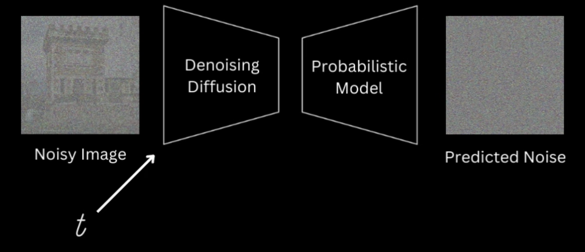
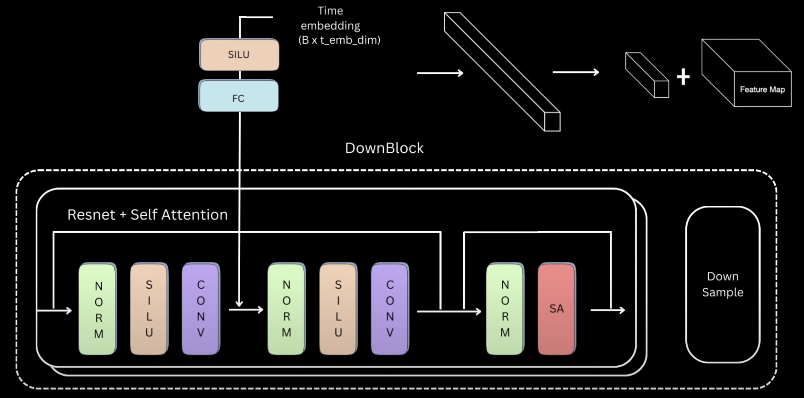

!pip install einops
!sudo apt install texlive-fonts-recommended texlive-fonts-extra
!sudo apt-get install dvipng!mkdir CelebA && wget https://s3-us-west-1.amazonaws.com/udacity-dlnfd/datasets/celeba.zip--2024-06-19 17:56:44-- https://s3-us-west-1.amazonaws.com/udacity-dlnfd/datasets/celeba.zip
Resolving s3-us-west-1.amazonaws.com (s3-us-west-1.amazonaws.com)... 52.219.194.16, 52.219.193.88, 52.219.193.48, ...
Connecting to s3-us-west-1.amazonaws.com (s3-us-west-1.amazonaws.com)|52.219.194.16|:443... connected.
HTTP request sent, awaiting response... 200 OK
Length: 1443490838 (1.3G) [application/zip]
Saving to: ‘celeba.zip’
celeba.zip 100%[===================>] 1.34G 61.2MB/s in 22s
2024-06-19 17:57:07 (61.7 MB/s) - ‘celeba.zip’ saved [1443490838/1443490838]
import zipfile
with zipfile.ZipFile("celeba.zip","r") as zip_ref:
zip_ref.extractall("CelebA/")import os
import random
import numpy as np
import torch
import torch.nn as nn
import torch.nn.parallel
import torch.nn.functional as F
import torchvision.utils as vutils
from torch.utils.data import DataLoader
from torchvision import datasets, transforms, models
import matplotlib.pyplot as plt
import matplotlib.animation as animation
from IPython.display import HTML
from einops import rearrange
# from latex import latexify
# latexify(columns = 2)
%matplotlib inline
%config InlineBackend.figure_format = "retina"
if torch.backends.mps.is_available():
device = torch.device("mps")
elif torch.cuda.is_available():
device = torch.device("cuda")
else:
device = torch.device("cpu")
print(device)cudaForward Process
\[ \textbf{x}_t = \sqrt{1 - \beta_t} \textbf{x}_{t - 1} + \sqrt{\beta_t} \epsilon_{t - 1} \]
\[ \boxed{\textbf{x}_t = \sqrt{\bar{\alpha_t}} \textbf{x}_0 + \sqrt{1 - \bar{\alpha_t}} \epsilon} \]
\[ \boxed{q(\textbf{x}_t | \textbf{x}_0) = \mathcal{N}(\textbf{x}_t; \sqrt{\bar{\alpha_t}} \textbf{x}_0, (1 - \bar{\alpha_t}) \mathbb{I})} \]
Reverse Distribution
\[ \boxed{q(\textbf{x}_{t - 1} | \textbf{x}_t, \textbf{x}_0) = \mathcal{N}(\textbf{x}_{t - 1}; \boldsymbol{\mu}_q(\textbf{x}_0, \textbf{x}_t), \mathbf{\Sigma}_q(t))} \]
\[ \boxed{\boldsymbol{\mu}_q(\textbf{x}_t, \textbf{x}_0) = \frac{(1 - \bar{\alpha}_{t - 1}) \sqrt{\alpha_t}}{1 - \bar{\alpha}_t} \textbf{x}_t + \frac{(1 - \alpha_t)\sqrt{\bar{\alpha}_{t - 1}}}{1 - \bar{\alpha}_t}\textbf{x}_0} \]
\[ \boxed{\boldsymbol{\mu}_q(t) = \frac{1}{\sqrt{\alpha_t}} \left(\textbf{x}_t - \frac{1 - \alpha_t}{\sqrt{1 - \bar{\alpha}_t}} \boldsymbol{\epsilon}_t \right)} \]
Loss Function
\[ L_{VN} = \sum_{t = 2}^T D_{KL} \left(p_{\theta}(\textbf{x}_{t - 1} | \textbf{x}_t) \parallel q(\textbf{x}_{t - 1} | \textbf{x}_t, \textbf{x}_0) \right) + \log p_{\theta}(\textbf{x}_0 | \textbf{x}_1) \]
\[ p_{\theta}(\textbf{x}_{t - 1} | \textbf{x}_t) = \mathcal{N}(\textbf{x}_{t - 1}; \boldsymbol{\mu}_{\theta}(\textbf{x}_t, t), \mathbf{\Sigma}_{\theta}(\textbf{x}_t, t)) \]
\[ L_t = \mathbb{E}_{\textbf{x}_0, \boldsymbol{\epsilon}} \left[ \frac{1}{2 \lVert \mathbf{\Sigma}_{\theta}(\textbf{x}_t, t) \rVert^2_2} \lVert \boldsymbol{\mu}_{\theta}(\textbf{x}_t, t) - \boldsymbol{\mu}_t(\textbf{x}_t, \textbf{x}_0) \rVert^2 \right] \]
\[ \boldsymbol{\mu}_{\theta}(\textbf{x}_t, t) = \frac{1}{\sqrt{\alpha_t}} \left(\textbf{x}_t - \frac{1 - \alpha_t}{\sqrt{1 - \bar{\alpha}_t}} \boldsymbol{\epsilon}_{\theta}(\textbf{x}_t, t) \right) \]
\[ L_t = \mathbb{E}_{\textbf{x}_0, \boldsymbol{\epsilon}} \left[ \frac{(1 - \alpha_t)^2}{2 \alpha_t (1 - \bar{\alpha}_t) \lVert \mathbf{\Sigma}_{\theta} \rVert^2_2} \lVert \boldsymbol{\epsilon}_{\theta}(\textbf{x}_t, t) - \boldsymbol{\epsilon}_t \rVert^2 \right] \]
\[ \color{OrangeRed}{\boxed{L_t^{\text{Simple}} = \mathbb{E}_{t \sim [1, T], \textbf{x}_0, \boldsymbol{\epsilon}_t} \left[\lVert \boldsymbol{\epsilon}_{\theta}((\sqrt{\bar{\alpha_t}}) \textbf{x}_0 + (\sqrt{1 - \bar{\alpha_t}})\boldsymbol{\epsilon}_t , t) - \boldsymbol{\epsilon}_t \rVert^2 \right]}} \]

Noise Scheduler
Task1: Getting the noisy image given \(\textbf{x}_t, t, \epsilon\)
\[ \textbf{x}_t, t, \epsilon \to \textbf{x}_t = \sqrt{\bar{\alpha_t}} \textbf{x}_0 + \sqrt{1 - \bar{\alpha_t}} \epsilon \]
\[ \alpha_t = 1 - \beta_t \]
\[ \bar{\alpha}_t = \prod_{i = 1}^t \alpha_i \]
We use linear noise scheduler with \(\beta_1 = 10^{-4}\) to \(\beta_T = 0.02\) and \(T = 1000\) steps between them.
Task2: Given \(\textbf{x}_t\) get \(\textbf{x}_{t - 1}\)
\[ p_{\theta}(\textbf{x}_{t - 1} | \textbf{x}_t) = \mathcal{N}(\textbf{x}_{t - 1}; \boldsymbol{\mu}_{\theta}(\textbf{x}_t, t), \mathbf{\Sigma}_{\theta}(\textbf{x}_t, t)) \]
\[ \boldsymbol{\mu}_{\theta} = \frac{1}{\sqrt{\alpha_t}} \left(\textbf{x}_t - \frac{1 - \alpha_t}{\sqrt{1 - \bar{\alpha}_t}} \boldsymbol{\epsilon}_{\theta} \right) \]
\[ \Sigma_q(t) = \frac{(1 - \alpha_t) \cdot (1 - \bar{\alpha}_{t - 1})}{(1 - \bar{\alpha}_t)} \mathbb{I} \]
\[ \begin{align} \textbf{x}_{t - 1} = \boldsymbol{\mu}_{\theta} + \sigma_t \textbf{z} && \textbf{z} \sim \mathcal{N}(\textbf{0}, \mathbb{I}) \end{align} \]
class LinearNoiseScheduler:
def __init__(self, T, beta_start, beta_end):
self.T = T
self.beta_start = beta_start
self.beta_end = beta_end
self.betas = torch.linspace(beta_start, beta_end, T)
self.alphas = 1 - self.betas
self.alphas_cumprod = torch.cumprod(self.alphas, dim = 0)
self.sqrt_alphas_cumprod = torch.sqrt(self.alphas_cumprod)
self.sqrt_1m_alphas_cumprod = torch.sqrt(1 - self.alphas_cumprod)
def add_noise(self, original, noise, t):
original_shape = original.shape
batch_size = original_shape[0]
sqrt_alpha_cum_prod = self.sqrt_alphas_cumprod.to(original.device)[t].reshape(batch_size)
sqrt_one_minus_alpha_cum_prod = self.sqrt_1m_alphas_cumprod.to(original.device)[t].reshape(batch_size)
for _ in range(len(original_shape) - 1):
sqrt_alpha_cum_prod = sqrt_alpha_cum_prod.unsqueeze(-1)
for _ in range(len(original_shape) - 1):
sqrt_one_minus_alpha_cum_prod = sqrt_one_minus_alpha_cum_prod.unsqueeze(-1)
return (sqrt_alpha_cum_prod.to(original.device) * original
+ sqrt_one_minus_alpha_cum_prod.to(original.device) * noise)
def sample_prev_timestep(self, xt, noise_pred, t):
x0 = (xt - (self.sqrt_alphas_cumprod.to(xt.device)[t] * noise_pred)) / self.sqrt_alphas_cumprod.to(xt.device)[t]
x0 = torch.clamp(x0, -1., 1.)
mean = (xt - ((self.betas.to(xt.device)[t] * noise_pred) / (self.sqrt_1m_alphas_cumprod.to(xt.device)[t]))) / torch.sqrt(self.alphas.to(xt.device)[t])
if t == 0:
return mean, x0
else:
variance = ((1 - self.alphas_cumprod.to(xt.device)[t - 1]) * self.betas.to(xt.device)[t]) / (1. - self.alphas_cumprod.to(xt.device)[t])
sigma = variance ** 0.5
z = torch.randn(xt.shape).to(xt.device)
return mean + sigma * z, x0Model Architecture - UNet inspired


\[ \text{DownBlock} \to \text{MidBlock} \to \text{UpBlock} \]
Time Embedding Block
Positional Encoding for a position \(t\) of an object, \(d\) dimension of output embedding space, \(i\) represents column index
\[ P(t, 2i) = \sin \left( \frac{t}{10000^{2i/d_{\text{model}}}} \right) \] \[ P(t, 2i + 1) = \cos \left( \frac{t}{10000^{2i/d_{\text{model}}}} \right) \]
Positional Encoding Block \(\to\) FC Layer \(\to\) \(\text{SiLU}\) Activation \(\to\) FC Layer
def get_time_embedding(T, d_model):
factor = 10000 ** ((torch.arange(start = 0, end = d_model // 2, dtype = torch.float32, device = T.device)) / (d_model // 2))
t_emb = T[:, None].repeat(1, d_model // 2) / factor
t_emb = torch.cat([torch.sin(t_emb), torch.cos(t_emb)], dim = -1)
return t_embDownBlock of UNet
There can be multiple layers of this \(\text{ResNet} + \text{Self Attention}\)

class DownBlock(nn.Module):
def __init__(self, in_channels, out_channels, d_model, down_sample, num_heads):
super().__init__()
self.down_sample = down_sample
self.resnet_conv_first = nn.Sequential(
nn.GroupNorm(8, in_channels),
nn.SiLU(),
nn.Conv2d(in_channels, out_channels, kernel_size = 3, stride = 1, padding = 1)
)
self.t_emb_layers = nn.Sequential(
nn.SiLU(),
nn.Linear(d_model, out_channels)
)
self.resnet_conv_second = nn.Sequential(
nn.GroupNorm(8, out_channels),
nn.SiLU(),
nn.Conv2d(out_channels, out_channels, kernel_size = 3, stride = 1, padding = 1)
)
self.attention_norm = nn.GroupNorm(8, out_channels)
self.attention = nn.MultiheadAttention(out_channels, num_heads, batch_first = True)
self.residual_input_conv = nn.Conv2d(in_channels, out_channels, kernel_size = 1)
self.down_sample_conv = nn.Conv2d(out_channels, out_channels, kernel_size = 4, stride = 2, padding = 1) if self.down_sample else nn.Identity()
def forward(self, x, t_emb):
out = x
# ResNet Block
resnet_input = out
out = self.resnet_conv_first(out)
out = out + self.t_emb_layers(t_emb)[:, :, None, None]
out = self.resnet_conv_second(out)
out = out + self.residual_input_conv(resnet_input)
# Attention Block
batch_size, channels, h, w = out.shape
in_attn = out.reshape(batch_size, channels, h * w)
in_attn = self.attention_norm(in_attn)
in_attn = in_attn.transpose(1, 2)
out_attn, _ = self.attention(in_attn, in_attn, in_attn)
out_attn = out_attn.transpose(1, 2).reshape(batch_size, channels, h, w)
out = out + out_attn
out = self.down_sample_conv(out)
return outclass MidBlock(nn.Module):
def __init__(self, in_channels, out_channels, d_model, num_heads):
super().__init__()
self.resnet_conv_first = nn.ModuleList([
nn.Sequential(
nn.GroupNorm(8, in_channels),
nn.SiLU(),
nn.Conv2d(in_channels, out_channels, kernel_size = 3, stride = 1, padding = 1)
),
nn.Sequential(
nn.GroupNorm(8, out_channels),
nn.SiLU(),
nn.Conv2d(out_channels, out_channels, kernel_size = 3, stride = 1, padding = 1)
)
])
self.t_emb_layers = nn.ModuleList([
nn.Sequential(
nn.SiLU(),
nn.Linear(d_model, out_channels)
),
nn.Sequential(
nn.SiLU(),
nn.Linear(d_model, out_channels)
)
])
self.resnet_conv_second = nn.ModuleList([
nn.Sequential(
nn.GroupNorm(8, out_channels),
nn.SiLU(),
nn.Conv2d(out_channels, out_channels, kernel_size = 3, stride = 1, padding = 1)
),
nn.Sequential(
nn.GroupNorm(8, out_channels),
nn.SiLU(),
nn.Conv2d(out_channels, out_channels, kernel_size = 3, stride = 1, padding = 1)
)
])
self.attention_norm = nn.GroupNorm(8, out_channels)
self.attention = nn.MultiheadAttention(out_channels, num_heads, batch_first = True)
self.residual_input_conv = nn.ModuleList([
nn.Conv2d(in_channels, out_channels, kernel_size = 1),
nn.Conv2d(out_channels, out_channels, kernel_size = 1)
])
def forward(self, x, t_emb):
out = x
# First ResNet Block
resnet_input = out
out = self.resnet_conv_first[0](out)
out = out + self.t_emb_layers[0](t_emb)[:, :, None, None]
out = self.resnet_conv_second[0](out)
out = out + self.residual_input_conv[0](resnet_input)
# Attention Block
batch_size, channels, h, w = out.shape
in_attn = out.reshape(batch_size, channels, h * w)
in_attn = self.attention_norm(in_attn)
in_attn = in_attn.transpose(1, 2)
out_attn, _ = self.attention(in_attn, in_attn, in_attn)
out_attn = out_attn.transpose(1, 2).reshape(batch_size, channels, h, w)
out = out + out_attn
# Second ResNet Block
resnet_input = out
out = self.resnet_conv_first[1](out)
out = out + self.t_emb_layers[1](t_emb)[:, :, None, None]
out = self.resnet_conv_second[1](out)
out = out + self.residual_input_conv[1](resnet_input)
return outclass UpBlock(nn.Module):
def __init__(self, in_channels, out_channels, d_model, up_sample, num_heads):
super().__init__()
self.up_sample = up_sample
self.resnet_conv_first = nn.Sequential(
nn.GroupNorm(8, in_channels),
nn.SiLU(),
nn.Conv2d(in_channels, out_channels, kernel_size = 3, stride = 1, padding = 1)
)
self.t_emb_layers = nn.Sequential(
nn.SiLU(),
nn.Linear(d_model, out_channels)
)
self.resnet_conv_second = nn.Sequential(
nn.GroupNorm(8, out_channels),
nn.SiLU(),
nn.Conv2d(out_channels, out_channels, kernel_size = 3, stride = 1, padding = 1)
)
self.attention_norm = nn.GroupNorm(8, out_channels)
self.attention = nn.MultiheadAttention(out_channels, num_heads, batch_first = True)
self.residual_input_conv = nn.Conv2d(in_channels, out_channels, kernel_size = 1)
self.up_sample_conv = nn.ConvTranspose2d(in_channels // 2, in_channels // 2,
4, 2, 1) \
if self.up_sample else nn.Identity()
def forward(self, x, out_down, t_emb):
x = self.up_sample_conv(x)
# if x.shape[2:] != out_down.shape[2:]:
# x = F.interpolate(x, size=out_down.shape[2:], mode = "nearest")
x = torch.cat([x, out_down], dim = 1)
# ResNet Block
out = x
resnet_input = out
out = self.resnet_conv_first(out)
out = out + self.t_emb_layers(t_emb)[:, :, None, None]
out = self.resnet_conv_second(out)
out = out + self.residual_input_conv(resnet_input)
# Attention Block
batch_size, channels, h, w = out.shape
in_attn = out.reshape(batch_size, channels, h * w)
in_attn = self.attention_norm(in_attn)
in_attn = in_attn.transpose(1, 2)
out_attn, _ = self.attention(in_attn, in_attn, in_attn)
out_attn = out_attn.transpose(1, 2).reshape(batch_size, channels, h, w)
out = out + out_attn
return outclass UNet(nn.Module):
def __init__(self, im_channels):
super().__init__()
self.down_channels = [32, 64, 128, 256]
self.mid_channels = [256, 256, 128]
self.d_model = 128
self.down_sample = [True, True, False]
self.t_proj = nn.Sequential(
nn.Linear(self.d_model, self.d_model),
nn.SiLU(),
nn.Linear(self.d_model, self.d_model)
)
self.up_sample = list(reversed(self.down_sample))
self.conv_in = nn.Conv2d(im_channels, self.down_channels[0], kernel_size = 3, padding = (1, 1))
self.downs = nn.ModuleList([])
for i in range(len(self.down_channels) - 1):
self.downs.append(DownBlock(self.down_channels[i], self.down_channels[i + 1], self.d_model, down_sample = self.down_sample[i], num_heads = 4))
self.mids = nn.ModuleList([])
for i in range(len(self.mid_channels) - 1):
self.mids.append(MidBlock(self.mid_channels[i], self.mid_channels[i + 1], self.d_model, num_heads = 4))
self.ups = nn.ModuleList([])
for i in reversed(range(len(self.down_channels) - 1)):
self.ups.append(UpBlock(self.down_channels[i] * 2, self.down_channels[i - 1] if i != 0 else 16, self.d_model, up_sample = self.down_sample[i], num_heads = 4))
self.norm_out = nn.GroupNorm(8, 16)
self.conv_out = nn.Conv2d(16, im_channels, kernel_size = 3, padding = 1)
def forward(self, x, t):
out = self.conv_in(x)
t_emb = self.t_proj(get_time_embedding(torch.as_tensor(t).long(), self.d_model))
down_outs = []
for down in self.downs:
down_outs.append(out)
out = down(out, t_emb)
for mid in self.mids:
out = mid(out, t_emb)
for up in self.ups:
down_out = down_outs.pop()
out = up(out, down_out, t_emb)
out = self.norm_out(out)
out = nn.SiLU()(out)
out = self.conv_out(out)
return out# Train Parameters
batch_size = 64
num_epochs = 40
lr = 1e-4
num_grid_rows = 8
num_samples = 64
# Diffusion Parameters
beta_start = 1e-4
beta_end = 0.02
T = 1000
# Model Parameters
nc = 3
image_size = 32transform = transforms.Compose([transforms.Resize(image_size), transforms.CenterCrop(image_size), transforms.ToTensor(), transforms.Normalize([0.5 for _ in range(nc)], [0.5 for _ in range(nc)])])celebADataset = datasets.ImageFolder(root = "./CelebA", transform = transform)
celebALoader = DataLoader(dataset = celebADataset, batch_size = batch_size, shuffle = True)scheduler = LinearNoiseScheduler(T, beta_start, beta_end)
model = UNet(nc).to(device)
model.train()UNet(
(t_proj): Sequential(
(0): Linear(in_features=128, out_features=128, bias=True)
(1): SiLU()
(2): Linear(in_features=128, out_features=128, bias=True)
)
(conv_in): Conv2d(3, 32, kernel_size=(3, 3), stride=(1, 1), padding=(1, 1))
(downs): ModuleList(
(0): DownBlock(
(resnet_conv_first): Sequential(
(0): GroupNorm(8, 32, eps=1e-05, affine=True)
(1): SiLU()
(2): Conv2d(32, 64, kernel_size=(3, 3), stride=(1, 1), padding=(1, 1))
)
(t_emb_layers): Sequential(
(0): SiLU()
(1): Linear(in_features=128, out_features=64, bias=True)
)
(resnet_conv_second): Sequential(
(0): GroupNorm(8, 64, eps=1e-05, affine=True)
(1): SiLU()
(2): Conv2d(64, 64, kernel_size=(3, 3), stride=(1, 1), padding=(1, 1))
)
(attention_norm): GroupNorm(8, 64, eps=1e-05, affine=True)
(attention): MultiheadAttention(
(out_proj): NonDynamicallyQuantizableLinear(in_features=64, out_features=64, bias=True)
)
(residual_input_conv): Conv2d(32, 64, kernel_size=(1, 1), stride=(1, 1))
(down_sample_conv): Conv2d(64, 64, kernel_size=(4, 4), stride=(2, 2), padding=(1, 1))
)
(1): DownBlock(
(resnet_conv_first): Sequential(
(0): GroupNorm(8, 64, eps=1e-05, affine=True)
(1): SiLU()
(2): Conv2d(64, 128, kernel_size=(3, 3), stride=(1, 1), padding=(1, 1))
)
(t_emb_layers): Sequential(
(0): SiLU()
(1): Linear(in_features=128, out_features=128, bias=True)
)
(resnet_conv_second): Sequential(
(0): GroupNorm(8, 128, eps=1e-05, affine=True)
(1): SiLU()
(2): Conv2d(128, 128, kernel_size=(3, 3), stride=(1, 1), padding=(1, 1))
)
(attention_norm): GroupNorm(8, 128, eps=1e-05, affine=True)
(attention): MultiheadAttention(
(out_proj): NonDynamicallyQuantizableLinear(in_features=128, out_features=128, bias=True)
)
(residual_input_conv): Conv2d(64, 128, kernel_size=(1, 1), stride=(1, 1))
(down_sample_conv): Conv2d(128, 128, kernel_size=(4, 4), stride=(2, 2), padding=(1, 1))
)
(2): DownBlock(
(resnet_conv_first): Sequential(
(0): GroupNorm(8, 128, eps=1e-05, affine=True)
(1): SiLU()
(2): Conv2d(128, 256, kernel_size=(3, 3), stride=(1, 1), padding=(1, 1))
)
(t_emb_layers): Sequential(
(0): SiLU()
(1): Linear(in_features=128, out_features=256, bias=True)
)
(resnet_conv_second): Sequential(
(0): GroupNorm(8, 256, eps=1e-05, affine=True)
(1): SiLU()
(2): Conv2d(256, 256, kernel_size=(3, 3), stride=(1, 1), padding=(1, 1))
)
(attention_norm): GroupNorm(8, 256, eps=1e-05, affine=True)
(attention): MultiheadAttention(
(out_proj): NonDynamicallyQuantizableLinear(in_features=256, out_features=256, bias=True)
)
(residual_input_conv): Conv2d(128, 256, kernel_size=(1, 1), stride=(1, 1))
(down_sample_conv): Identity()
)
)
(mids): ModuleList(
(0): MidBlock(
(resnet_conv_first): ModuleList(
(0-1): 2 x Sequential(
(0): GroupNorm(8, 256, eps=1e-05, affine=True)
(1): SiLU()
(2): Conv2d(256, 256, kernel_size=(3, 3), stride=(1, 1), padding=(1, 1))
)
)
(t_emb_layers): ModuleList(
(0-1): 2 x Sequential(
(0): SiLU()
(1): Linear(in_features=128, out_features=256, bias=True)
)
)
(resnet_conv_second): ModuleList(
(0-1): 2 x Sequential(
(0): GroupNorm(8, 256, eps=1e-05, affine=True)
(1): SiLU()
(2): Conv2d(256, 256, kernel_size=(3, 3), stride=(1, 1), padding=(1, 1))
)
)
(attention_norm): GroupNorm(8, 256, eps=1e-05, affine=True)
(attention): MultiheadAttention(
(out_proj): NonDynamicallyQuantizableLinear(in_features=256, out_features=256, bias=True)
)
(residual_input_conv): ModuleList(
(0-1): 2 x Conv2d(256, 256, kernel_size=(1, 1), stride=(1, 1))
)
)
(1): MidBlock(
(resnet_conv_first): ModuleList(
(0): Sequential(
(0): GroupNorm(8, 256, eps=1e-05, affine=True)
(1): SiLU()
(2): Conv2d(256, 128, kernel_size=(3, 3), stride=(1, 1), padding=(1, 1))
)
(1): Sequential(
(0): GroupNorm(8, 128, eps=1e-05, affine=True)
(1): SiLU()
(2): Conv2d(128, 128, kernel_size=(3, 3), stride=(1, 1), padding=(1, 1))
)
)
(t_emb_layers): ModuleList(
(0-1): 2 x Sequential(
(0): SiLU()
(1): Linear(in_features=128, out_features=128, bias=True)
)
)
(resnet_conv_second): ModuleList(
(0-1): 2 x Sequential(
(0): GroupNorm(8, 128, eps=1e-05, affine=True)
(1): SiLU()
(2): Conv2d(128, 128, kernel_size=(3, 3), stride=(1, 1), padding=(1, 1))
)
)
(attention_norm): GroupNorm(8, 128, eps=1e-05, affine=True)
(attention): MultiheadAttention(
(out_proj): NonDynamicallyQuantizableLinear(in_features=128, out_features=128, bias=True)
)
(residual_input_conv): ModuleList(
(0): Conv2d(256, 128, kernel_size=(1, 1), stride=(1, 1))
(1): Conv2d(128, 128, kernel_size=(1, 1), stride=(1, 1))
)
)
)
(ups): ModuleList(
(0): UpBlock(
(resnet_conv_first): Sequential(
(0): GroupNorm(8, 256, eps=1e-05, affine=True)
(1): SiLU()
(2): Conv2d(256, 64, kernel_size=(3, 3), stride=(1, 1), padding=(1, 1))
)
(t_emb_layers): Sequential(
(0): SiLU()
(1): Linear(in_features=128, out_features=64, bias=True)
)
(resnet_conv_second): Sequential(
(0): GroupNorm(8, 64, eps=1e-05, affine=True)
(1): SiLU()
(2): Conv2d(64, 64, kernel_size=(3, 3), stride=(1, 1), padding=(1, 1))
)
(attention_norm): GroupNorm(8, 64, eps=1e-05, affine=True)
(attention): MultiheadAttention(
(out_proj): NonDynamicallyQuantizableLinear(in_features=64, out_features=64, bias=True)
)
(residual_input_conv): Conv2d(256, 64, kernel_size=(1, 1), stride=(1, 1))
(up_sample_conv): Identity()
)
(1): UpBlock(
(resnet_conv_first): Sequential(
(0): GroupNorm(8, 128, eps=1e-05, affine=True)
(1): SiLU()
(2): Conv2d(128, 32, kernel_size=(3, 3), stride=(1, 1), padding=(1, 1))
)
(t_emb_layers): Sequential(
(0): SiLU()
(1): Linear(in_features=128, out_features=32, bias=True)
)
(resnet_conv_second): Sequential(
(0): GroupNorm(8, 32, eps=1e-05, affine=True)
(1): SiLU()
(2): Conv2d(32, 32, kernel_size=(3, 3), stride=(1, 1), padding=(1, 1))
)
(attention_norm): GroupNorm(8, 32, eps=1e-05, affine=True)
(attention): MultiheadAttention(
(out_proj): NonDynamicallyQuantizableLinear(in_features=32, out_features=32, bias=True)
)
(residual_input_conv): Conv2d(128, 32, kernel_size=(1, 1), stride=(1, 1))
(up_sample_conv): ConvTranspose2d(64, 64, kernel_size=(4, 4), stride=(2, 2), padding=(1, 1))
)
(2): UpBlock(
(resnet_conv_first): Sequential(
(0): GroupNorm(8, 64, eps=1e-05, affine=True)
(1): SiLU()
(2): Conv2d(64, 16, kernel_size=(3, 3), stride=(1, 1), padding=(1, 1))
)
(t_emb_layers): Sequential(
(0): SiLU()
(1): Linear(in_features=128, out_features=16, bias=True)
)
(resnet_conv_second): Sequential(
(0): GroupNorm(8, 16, eps=1e-05, affine=True)
(1): SiLU()
(2): Conv2d(16, 16, kernel_size=(3, 3), stride=(1, 1), padding=(1, 1))
)
(attention_norm): GroupNorm(8, 16, eps=1e-05, affine=True)
(attention): MultiheadAttention(
(out_proj): NonDynamicallyQuantizableLinear(in_features=16, out_features=16, bias=True)
)
(residual_input_conv): Conv2d(64, 16, kernel_size=(1, 1), stride=(1, 1))
(up_sample_conv): ConvTranspose2d(32, 32, kernel_size=(4, 4), stride=(2, 2), padding=(1, 1))
)
)
(norm_out): GroupNorm(8, 16, eps=1e-05, affine=True)
(conv_out): Conv2d(16, 3, kernel_size=(3, 3), stride=(1, 1), padding=(1, 1))
)optimizer = torch.optim.Adam(model.parameters(), lr = lr)
criterion = nn.MSELoss()
for epoch in range(num_epochs):
losses = []
for i, (images, _) in enumerate(celebALoader):
optimizer.zero_grad()
images = images.float().to(device)
noise = torch.randn_like(images).to(device)
t = torch.randint(0, T, (images.shape[0],)).to(device)
noisy_img = scheduler.add_noise(images, noise, t)
noise_pred = model(noisy_img, t)
loss = criterion(noise_pred, noise)
losses.append(loss.item())
loss.backward()
optimizer.step()
del images
del noisy_img
del noise_pred
del noise
print(f"Epoch [{epoch + 1}/{num_epochs}], Loss: {np.mean(losses)}")
torch.save(model.state_dict(), "denoiseModelCeleb.pth")Epoch [1/40], Loss: 0.10160287155752704
Epoch [2/40], Loss: 0.03667867321118628
Epoch [3/40], Loss: 0.03253764333056353
Epoch [4/40], Loss: 0.03081813406649876
Epoch [5/40], Loss: 0.029599356160287946
Epoch [6/40], Loss: 0.02917470770669761
Epoch [7/40], Loss: 0.028544318118613316
Epoch [8/40], Loss: 0.028117591563132146
Epoch [9/40], Loss: 0.027740449694485952
Epoch [10/40], Loss: 0.027557271074113012KeyboardInterrupt: device = torch.device("cuda" if torch.cuda.is_available() else "cpu")scheduler = LinearNoiseScheduler(T, beta_start, beta_end)
model = UNet(nc).to(device)
model.load_state_dict(torch.load("./denoiseModelCeleb.pth", map_location = device))
model.eval()
with torch.no_grad():
xt = torch.randn((num_samples, nc, image_size, image_size)).to(device)
for t in reversed(range(T)):
noise_pred = model(xt, torch.as_tensor(t).unsqueeze(0).to(device))
xt, x0_pred = scheduler.sample_prev_timestep(xt, noise_pred, torch.as_tensor(t).to(device))
ims = torch.clamp(xt, -1., 1.).detach().cpu()
ims = (ims + 1) / 2
grid = vutils.make_grid(ims, nrow = num_grid_rows)
if (t % 50 == 0):
plt.figure(figsize = (10, 10))
plt.axis("off")
# plt.title(f"t = {t}")
plt.imshow(np.transpose(grid.cpu().detach().numpy(), (1, 2, 0)))
plt.show()
img = transforms.ToPILImage()(grid)
if not os.path.exists("./DDPM/Celeb"):
os.makedirs("./DDPM/Celeb")
img.save(f"./DDPM/Celeb/x0_{t}.png")
img.close()
!zip -r ./DDPM.zip ./DDPM/ adding: DDPM/ (stored 0%)
adding: DDPM/Celeb/ (stored 0%)
adding: DDPM/Celeb/x0_493.png (deflated 0%)
adding: DDPM/Celeb/x0_266.png (deflated 0%)
adding: DDPM/Celeb/x0_136.png (deflated 0%)
adding: DDPM/Celeb/x0_314.png (deflated 0%)
adding: DDPM/Celeb/x0_460.png (deflated 0%)
adding: DDPM/Celeb/x0_500.png (deflated 0%)
adding: DDPM/Celeb/x0_318.png (deflated 0%)
adding: DDPM/Celeb/x0_230.png (deflated 0%)
adding: DDPM/Celeb/x0_298.png (deflated 0%)
adding: DDPM/Celeb/x0_401.png (deflated 0%)
adding: DDPM/Celeb/x0_752.png (deflated 0%)
adding: DDPM/Celeb/x0_675.png (deflated 0%)
adding: DDPM/Celeb/x0_601.png (deflated 0%)
adding: DDPM/Celeb/x0_883.png (deflated 0%)
adding: DDPM/Celeb/x0_216.png (deflated 0%)
adding: DDPM/Celeb/x0_605.png (deflated 0%)
adding: DDPM/Celeb/x0_839.png (deflated 0%)
adding: DDPM/Celeb/x0_496.png (deflated 0%)
adding: DDPM/Celeb/x0_749.png (deflated 0%)
adding: DDPM/Celeb/x0_499.png (deflated 0%)
adding: DDPM/Celeb/x0_771.png (deflated 0%)
adding: DDPM/Celeb/x0_763.png (deflated 0%)
adding: DDPM/Celeb/x0_169.png (deflated 0%)
adding: DDPM/Celeb/x0_878.png (deflated 0%)
adding: DDPM/Celeb/x0_914.png (deflated 0%)
adding: DDPM/Celeb/x0_916.png (deflated 0%)
adding: DDPM/Celeb/x0_119.png (deflated 0%)
adding: DDPM/Celeb/x0_743.png (deflated 0%)
adding: DDPM/Celeb/x0_982.png (deflated 0%)
adding: DDPM/Celeb/x0_992.png (deflated 0%)
adding: DDPM/Celeb/x0_214.png (deflated 0%)
adding: DDPM/Celeb/x0_699.png (deflated 0%)
adding: DDPM/Celeb/x0_842.png (deflated 0%)
adding: DDPM/Celeb/x0_307.png (deflated 0%)
adding: DDPM/Celeb/x0_931.png (deflated 0%)
adding: DDPM/Celeb/x0_741.png (deflated 0%)
adding: DDPM/Celeb/x0_824.png (deflated 0%)
adding: DDPM/Celeb/x0_423.png (deflated 0%)
adding: DDPM/Celeb/x0_696.png (deflated 0%)
adding: DDPM/Celeb/x0_618.png (deflated 0%)
adding: DDPM/Celeb/x0_756.png (deflated 0%)
adding: DDPM/Celeb/x0_86.png (deflated 0%)
adding: DDPM/Celeb/x0_35.png (deflated 0%)
adding: DDPM/Celeb/x0_14.png (deflated 0%)
adding: DDPM/Celeb/x0_550.png (deflated 0%)
adding: DDPM/Celeb/x0_142.png (deflated 0%)
adding: DDPM/Celeb/x0_95.png (deflated 0%)
adding: DDPM/Celeb/x0_110.png (deflated 0%)
adding: DDPM/Celeb/x0_556.png (deflated 0%)
adding: DDPM/Celeb/x0_359.png (deflated 0%)
adding: DDPM/Celeb/x0_530.png (deflated 0%)
adding: DDPM/Celeb/x0_81.png (deflated 0%)
adding: DDPM/Celeb/x0_225.png (deflated 0%)
adding: DDPM/Celeb/x0_750.png (deflated 0%)
adding: DDPM/Celeb/x0_723.png (deflated 0%)
adding: DDPM/Celeb/x0_545.png (deflated 0%)
adding: DDPM/Celeb/x0_932.png (deflated 0%)
adding: DDPM/Celeb/x0_525.png (deflated 0%)
adding: DDPM/Celeb/x0_891.png (deflated 0%)
adding: DDPM/Celeb/x0_173.png (deflated 0%)
adding: DDPM/Celeb/x0_240.png (deflated 0%)
adding: DDPM/Celeb/x0_260.png (deflated 0%)
adding: DDPM/Celeb/x0_912.png (deflated 0%)
adding: DDPM/Celeb/x0_273.png (deflated 0%)
adding: DDPM/Celeb/x0_441.png (deflated 0%)
adding: DDPM/Celeb/x0_281.png (deflated 0%)
adding: DDPM/Celeb/x0_243.png (deflated 0%)
adding: DDPM/Celeb/x0_770.png (deflated 0%)
adding: DDPM/Celeb/x0_182.png (deflated 0%)
adding: DDPM/Celeb/x0_677.png (deflated 0%)
adding: DDPM/Celeb/x0_573.png (deflated 0%)
adding: DDPM/Celeb/x0_560.png (deflated 0%)
adding: DDPM/Celeb/x0_66.png (deflated 0%)
adding: DDPM/Celeb/x0_880.png (deflated 0%)
adding: DDPM/Celeb/x0_510.png (deflated 0%)
adding: DDPM/Celeb/x0_352.png (deflated 0%)
adding: DDPM/Celeb/x0_101.png (deflated 0%)
adding: DDPM/Celeb/x0_821.png (deflated 0%)
adding: DDPM/Celeb/x0_961.png (deflated 0%)
adding: DDPM/Celeb/x0_364.png (deflated 0%)
adding: DDPM/Celeb/x0_269.png (deflated 0%)
adding: DDPM/Celeb/x0_512.png (deflated 0%)
adding: DDPM/Celeb/x0_935.png (deflated 0%)
adding: DDPM/Celeb/x0_380.png (deflated 0%)
adding: DDPM/Celeb/x0_79.png (deflated 0%)
adding: DDPM/Celeb/x0_532.png (deflated 0%)
adding: DDPM/Celeb/x0_793.png (deflated 0%)
adding: DDPM/Celeb/x0_852.png (deflated 0%)
adding: DDPM/Celeb/x0_518.png (deflated 0%)
adding: DDPM/Celeb/x0_350.png (deflated 0%)
adding: DDPM/Celeb/x0_431.png (deflated 0%)
adding: DDPM/Celeb/x0_746.png (deflated 0%)
adding: DDPM/Celeb/x0_881.png (deflated 0%)
adding: DDPM/Celeb/x0_662.png (deflated 0%)
adding: DDPM/Celeb/x0_975.png (deflated 0%)
adding: DDPM/Celeb/x0_130.png (deflated 0%)
adding: DDPM/Celeb/x0_435.png (deflated 0%)
adding: DDPM/Celeb/x0_244.png (deflated 0%)
adding: DDPM/Celeb/x0_313.png (deflated 0%)
adding: DDPM/Celeb/x0_988.png (deflated 0%)
adding: DDPM/Celeb/x0_590.png (deflated 0%)
adding: DDPM/Celeb/x0_909.png (deflated 0%)
adding: DDPM/Celeb/x0_362.png (deflated 0%)
adding: DDPM/Celeb/x0_522.png (deflated 0%)
adding: DDPM/Celeb/x0_134.png (deflated 0%)
adding: DDPM/Celeb/x0_906.png (deflated 0%)
adding: DDPM/Celeb/x0_802.png (deflated 0%)
adding: DDPM/Celeb/x0_99.png (deflated 0%)
adding: DDPM/Celeb/x0_917.png (deflated 0%)
adding: DDPM/Celeb/x0_9.png (deflated 0%)
adding: DDPM/Celeb/x0_256.png (deflated 0%)
adding: DDPM/Celeb/x0_882.png (deflated 0%)
adding: DDPM/Celeb/x0_602.png (deflated 0%)
adding: DDPM/Celeb/x0_275.png (deflated 0%)
adding: DDPM/Celeb/x0_803.png (deflated 0%)
adding: DDPM/Celeb/x0_853.png (deflated 0%)
adding: DDPM/Celeb/x0_734.png (deflated 0%)
adding: DDPM/Celeb/x0_897.png (deflated 0%)
adding: DDPM/Celeb/x0_234.png (deflated 0%)
adding: DDPM/Celeb/x0_97.png (deflated 0%)
adding: DDPM/Celeb/x0_722.png (deflated 0%)
adding: DDPM/Celeb/x0_862.png (deflated 0%)
adding: DDPM/Celeb/x0_565.png (deflated 0%)
adding: DDPM/Celeb/x0_492.png (deflated 0%)
adding: DDPM/Celeb/x0_652.png (deflated 0%)
adding: DDPM/Celeb/x0_227.png (deflated 0%)
adding: DDPM/Celeb/x0_825.png (deflated 0%)
adding: DDPM/Celeb/x0_964.png (deflated 0%)
adding: DDPM/Celeb/x0_452.png (deflated 0%)
adding: DDPM/Celeb/x0_792.png (deflated 0%)
adding: DDPM/Celeb/x0_374.png (deflated 0%)
adding: DDPM/Celeb/x0_279.png (deflated 0%)
adding: DDPM/Celeb/x0_385.png (deflated 0%)
adding: DDPM/Celeb/x0_672.png (deflated 0%)
adding: DDPM/Celeb/x0_329.png (deflated 0%)
adding: DDPM/Celeb/x0_470.png (deflated 0%)
adding: DDPM/Celeb/x0_67.png (deflated 0%)
adding: DDPM/Celeb/x0_786.png (deflated 0%)
adding: DDPM/Celeb/x0_0.png (deflated 0%)
adding: DDPM/Celeb/x0_93.png (deflated 0%)
adding: DDPM/Celeb/x0_82.png (deflated 0%)
adding: DDPM/Celeb/x0_691.png (deflated 0%)
adding: DDPM/Celeb/x0_140.png (deflated 0%)
adding: DDPM/Celeb/x0_23.png (deflated 0%)
adding: DDPM/Celeb/x0_61.png (deflated 0%)
adding: DDPM/Celeb/x0_31.png (deflated 0%)
adding: DDPM/Celeb/x0_599.png (deflated 0%)
adding: DDPM/Celeb/x0_198.png (deflated 0%)
adding: DDPM/Celeb/x0_933.png (deflated 0%)
adding: DDPM/Celeb/x0_361.png (deflated 0%)
adding: DDPM/Celeb/x0_674.png (deflated 0%)
adding: DDPM/Celeb/x0_412.png (deflated 0%)
adding: DDPM/Celeb/x0_558.png (deflated 0%)
adding: DDPM/Celeb/x0_997.png (deflated 0%)
adding: DDPM/Celeb/x0_642.png (deflated 0%)
adding: DDPM/Celeb/x0_201.png (deflated 0%)
adding: DDPM/Celeb/x0_112.png (deflated 0%)
adding: DDPM/Celeb/x0_643.png (deflated 0%)
adding: DDPM/Celeb/x0_669.png (deflated 0%)
adding: DDPM/Celeb/x0_744.png (deflated 0%)
adding: DDPM/Celeb/x0_971.png (deflated 0%)
adding: DDPM/Celeb/x0_563.png (deflated 0%)
adding: DDPM/Celeb/x0_572.png (deflated 0%)
adding: DDPM/Celeb/x0_617.png (deflated 0%)
adding: DDPM/Celeb/x0_574.png (deflated 0%)
adding: DDPM/Celeb/x0_285.png (deflated 0%)
adding: DDPM/Celeb/x0_258.png (deflated 0%)
adding: DDPM/Celeb/x0_212.png (deflated 0%)
adding: DDPM/Celeb/x0_728.png (deflated 0%)
adding: DDPM/Celeb/x0_297.png (deflated 0%)
adding: DDPM/Celeb/x0_899.png (deflated 0%)
adding: DDPM/Celeb/x0_748.png (deflated 0%)
adding: DDPM/Celeb/x0_219.png (deflated 0%)
adding: DDPM/Celeb/x0_348.png (deflated 0%)
adding: DDPM/Celeb/x0_926.png (deflated 0%)
adding: DDPM/Celeb/x0_70.png (deflated 0%)
adding: DDPM/Celeb/x0_217.png (deflated 0%)
adding: DDPM/Celeb/x0_936.png (deflated 0%)
adding: DDPM/Celeb/x0_277.png (deflated 0%)
adding: DDPM/Celeb/x0_143.png (deflated 0%)
adding: DDPM/Celeb/x0_816.png (deflated 0%)
adding: DDPM/Celeb/x0_455.png (deflated 0%)
adding: DDPM/Celeb/x0_523.png (deflated 0%)
adding: DDPM/Celeb/x0_647.png (deflated 0%)
adding: DDPM/Celeb/x0_69.png (deflated 0%)
adding: DDPM/Celeb/x0_176.png (deflated 0%)
adding: DDPM/Celeb/x0_319.png (deflated 0%)
adding: DDPM/Celeb/x0_306.png (deflated 0%)
adding: DDPM/Celeb/x0_203.png (deflated 0%)
adding: DDPM/Celeb/x0_943.png (deflated 0%)
adding: DDPM/Celeb/x0_668.png (deflated 0%)
adding: DDPM/Celeb/x0_477.png (deflated 0%)
adding: DDPM/Celeb/x0_376.png (deflated 0%)
adding: DDPM/Celeb/x0_118.png (deflated 0%)
adding: DDPM/Celeb/x0_555.png (deflated 0%)
adding: DDPM/Celeb/x0_368.png (deflated 0%)
adding: DDPM/Celeb/x0_340.png (deflated 0%)
adding: DDPM/Celeb/x0_120.png (deflated 0%)
adding: DDPM/Celeb/x0_797.png (deflated 0%)
adding: DDPM/Celeb/x0_338.png (deflated 0%)
adding: DDPM/Celeb/x0_508.png (deflated 0%)
adding: DDPM/Celeb/x0_63.png (deflated 0%)
adding: DDPM/Celeb/x0_869.png (deflated 0%)
adding: DDPM/Celeb/x0_603.png (deflated 0%)
adding: DDPM/Celeb/x0_762.png (deflated 0%)
adding: DDPM/Celeb/x0_76.png (deflated 0%)
adding: DDPM/Celeb/x0_155.png (deflated 0%)
adding: DDPM/Celeb/x0_986.png (deflated 0%)
adding: DDPM/Celeb/x0_193.png (deflated 0%)
adding: DDPM/Celeb/x0_861.png (deflated 0%)
adding: DDPM/Celeb/x0_135.png (deflated 0%)
adding: DDPM/Celeb/x0_278.png (deflated 0%)
adding: DDPM/Celeb/x0_670.png (deflated 0%)
adding: DDPM/Celeb/x0_52.png (deflated 0%)
adding: DDPM/Celeb/x0_96.png (deflated 0%)
adding: DDPM/Celeb/x0_222.png (deflated 0%)
adding: DDPM/Celeb/x0_220.png (deflated 0%)
adding: DDPM/Celeb/x0_831.png (deflated 0%)
adding: DDPM/Celeb/x0_157.png (deflated 0%)
adding: DDPM/Celeb/x0_900.png (deflated 0%)
adding: DDPM/Celeb/x0_371.png (deflated 0%)
adding: DDPM/Celeb/x0_844.png (deflated 0%)
adding: DDPM/Celeb/x0_291.png (deflated 0%)
adding: DDPM/Celeb/x0_267.png (deflated 0%)
adding: DDPM/Celeb/x0_638.png (deflated 0%)
adding: DDPM/Celeb/x0_705.png (deflated 0%)
adding: DDPM/Celeb/x0_42.png (deflated 0%)
adding: DDPM/Celeb/x0_919.png (deflated 0%)
adding: DDPM/Celeb/x0_283.png (deflated 0%)
adding: DDPM/Celeb/x0_800.png (deflated 0%)
adding: DDPM/Celeb/x0_991.png (deflated 0%)
adding: DDPM/Celeb/x0_973.png (deflated 0%)
adding: DDPM/Celeb/x0_451.png (deflated 0%)
adding: DDPM/Celeb/x0_22.png (deflated 0%)
adding: DDPM/Celeb/x0_393.png (deflated 0%)
adding: DDPM/Celeb/x0_864.png (deflated 0%)
adding: DDPM/Celeb/x0_784.png (deflated 0%)
adding: DDPM/Celeb/x0_239.png (deflated 0%)
adding: DDPM/Celeb/x0_284.png (deflated 0%)
adding: DDPM/Celeb/x0_447.png (deflated 0%)
adding: DDPM/Celeb/x0_485.png (deflated 0%)
adding: DDPM/Celeb/x0_855.png (deflated 0%)
adding: DDPM/Celeb/x0_427.png (deflated 0%)
adding: DDPM/Celeb/x0_473.png (deflated 0%)
adding: DDPM/Celeb/x0_105.png (deflated 0%)
adding: DDPM/Celeb/x0_667.png (deflated 0%)
adding: DDPM/Celeb/x0_355.png (deflated 0%)
adding: DDPM/Celeb/x0_596.png (deflated 0%)
adding: DDPM/Celeb/x0_299.png (deflated 0%)
adding: DDPM/Celeb/x0_981.png (deflated 0%)
adding: DDPM/Celeb/x0_391.png (deflated 0%)
adding: DDPM/Celeb/x0_453.png (deflated 0%)
adding: DDPM/Celeb/x0_775.png (deflated 0%)
adding: DDPM/Celeb/x0_180.png (deflated 0%)
adding: DDPM/Celeb/x0_20.png (deflated 0%)
adding: DDPM/Celeb/x0_620.png (deflated 0%)
adding: DDPM/Celeb/x0_621.png (deflated 0%)
adding: DDPM/Celeb/x0_410.png (deflated 0%)
adding: DDPM/Celeb/x0_72.png (deflated 0%)
adding: DDPM/Celeb/x0_424.png (deflated 0%)
adding: DDPM/Celeb/x0_28.png (deflated 0%)
adding: DDPM/Celeb/x0_529.png (deflated 0%)
adding: DDPM/Celeb/x0_434.png (deflated 0%)
adding: DDPM/Celeb/x0_673.png (deflated 0%)
adding: DDPM/Celeb/x0_767.png (deflated 0%)
adding: DDPM/Celeb/x0_396.png (deflated 0%)
adding: DDPM/Celeb/x0_156.png (deflated 0%)
adding: DDPM/Celeb/x0_575.png (deflated 0%)
adding: DDPM/Celeb/x0_390.png (deflated 0%)
adding: DDPM/Celeb/x0_976.png (deflated 0%)
adding: DDPM/Celeb/x0_426.png (deflated 0%)
adding: DDPM/Celeb/x0_719.png (deflated 0%)
adding: DDPM/Celeb/x0_288.png (deflated 0%)
adding: DDPM/Celeb/x0_937.png (deflated 0%)
adding: DDPM/Celeb/x0_161.png (deflated 0%)
adding: DDPM/Celeb/x0_296.png (deflated 0%)
adding: DDPM/Celeb/x0_302.png (deflated 0%)
adding: DDPM/Celeb/x0_534.png (deflated 0%)
adding: DDPM/Celeb/x0_808.png (deflated 0%)
adding: DDPM/Celeb/x0_640.png (deflated 0%)
adding: DDPM/Celeb/x0_246.png (deflated 0%)
adding: DDPM/Celeb/x0_194.png (deflated 0%)
adding: DDPM/Celeb/x0_676.png (deflated 0%)
adding: DDPM/Celeb/x0_248.png (deflated 0%)
adding: DDPM/Celeb/x0_226.png (deflated 0%)
adding: DDPM/Celeb/x0_872.png (deflated 0%)
adding: DDPM/Celeb/x0_218.png (deflated 0%)
adding: DDPM/Celeb/x0_121.png (deflated 0%)
adding: DDPM/Celeb/x0_13.png (deflated 0%)
adding: DDPM/Celeb/x0_422.png (deflated 0%)
adding: DDPM/Celeb/x0_830.png (deflated 0%)
adding: DDPM/Celeb/x0_263.png (deflated 0%)
adding: DDPM/Celeb/x0_484.png (deflated 0%)
adding: DDPM/Celeb/x0_664.png (deflated 0%)
adding: DDPM/Celeb/x0_413.png (deflated 0%)
adding: DDPM/Celeb/x0_732.png (deflated 0%)
adding: DDPM/Celeb/x0_328.png (deflated 0%)
adding: DDPM/Celeb/x0_552.png (deflated 0%)
adding: DDPM/Celeb/x0_962.png (deflated 0%)
adding: DDPM/Celeb/x0_345.png (deflated 0%)
adding: DDPM/Celeb/x0_168.png (deflated 0%)
adding: DDPM/Celeb/x0_92.png (deflated 0%)
adding: DDPM/Celeb/x0_83.png (deflated 0%)
adding: DDPM/Celeb/x0_252.png (deflated 0%)
adding: DDPM/Celeb/x0_245.png (deflated 0%)
adding: DDPM/Celeb/x0_989.png (deflated 0%)
adding: DDPM/Celeb/x0_88.png (deflated 0%)
adding: DDPM/Celeb/x0_610.png (deflated 0%)
adding: DDPM/Celeb/x0_820.png (deflated 0%)
adding: DDPM/Celeb/x0_928.png (deflated 0%)
adding: DDPM/Celeb/x0_700.png (deflated 0%)
adding: DDPM/Celeb/x0_294.png (deflated 0%)
adding: DDPM/Celeb/x0_606.png (deflated 0%)
adding: DDPM/Celeb/x0_923.png (deflated 0%)
adding: DDPM/Celeb/x0_639.png (deflated 0%)
adding: DDPM/Celeb/x0_804.png (deflated 0%)
adding: DDPM/Celeb/x0_686.png (deflated 0%)
adding: DDPM/Celeb/x0_689.png (deflated 0%)
adding: DDPM/Celeb/x0_356.png (deflated 0%)
adding: DDPM/Celeb/x0_998.png (deflated 0%)
adding: DDPM/Celeb/x0_715.png (deflated 0%)
adding: DDPM/Celeb/x0_956.png (deflated 0%)
adding: DDPM/Celeb/x0_64.png (deflated 0%)
adding: DDPM/Celeb/x0_860.png (deflated 0%)
adding: DDPM/Celeb/x0_774.png (deflated 0%)
adding: DDPM/Celeb/x0_751.png (deflated 0%)
adding: DDPM/Celeb/x0_684.png (deflated 0%)
adding: DDPM/Celeb/x0_326.png (deflated 0%)
adding: DDPM/Celeb/x0_487.png (deflated 0%)
adding: DDPM/Celeb/x0_190.png (deflated 0%)
adding: DDPM/Celeb/x0_404.png (deflated 0%)
adding: DDPM/Celeb/x0_631.png (deflated 0%)
adding: DDPM/Celeb/x0_559.png (deflated 0%)
adding: DDPM/Celeb/x0_578.png (deflated 0%)
adding: DDPM/Celeb/x0_478.png (deflated 0%)
adding: DDPM/Celeb/x0_693.png (deflated 0%)
adding: DDPM/Celeb/x0_450.png (deflated 0%)
adding: DDPM/Celeb/x0_688.png (deflated 0%)
adding: DDPM/Celeb/x0_907.png (deflated 0%)
adding: DDPM/Celeb/x0_80.png (deflated 0%)
adding: DDPM/Celeb/x0_261.png (deflated 0%)
adding: DDPM/Celeb/x0_47.png (deflated 0%)
adding: DDPM/Celeb/x0_612.png (deflated 0%)
adding: DDPM/Celeb/x0_337.png (deflated 0%)
adding: DDPM/Celeb/x0_892.png (deflated 0%)
adding: DDPM/Celeb/x0_911.png (deflated 0%)
adding: DDPM/Celeb/x0_62.png (deflated 0%)
adding: DDPM/Celeb/x0_497.png (deflated 0%)
adding: DDPM/Celeb/x0_805.png (deflated 0%)
adding: DDPM/Celeb/x0_760.png (deflated 0%)
adding: DDPM/Celeb/x0_651.png (deflated 0%)
adding: DDPM/Celeb/x0_181.png (deflated 0%)
adding: DDPM/Celeb/x0_370.png (deflated 0%)
adding: DDPM/Celeb/x0_408.png (deflated 0%)
adding: DDPM/Celeb/x0_742.png (deflated 0%)
adding: DDPM/Celeb/x0_941.png (deflated 0%)
adding: DDPM/Celeb/x0_494.png (deflated 0%)
adding: DDPM/Celeb/x0_471.png (deflated 0%)
adding: DDPM/Celeb/x0_381.png (deflated 0%)
adding: DDPM/Celeb/x0_301.png (deflated 0%)
adding: DDPM/Celeb/x0_465.png (deflated 0%)
adding: DDPM/Celeb/x0_145.png (deflated 0%)
adding: DDPM/Celeb/x0_959.png (deflated 0%)
adding: DDPM/Celeb/x0_253.png (deflated 0%)
adding: DDPM/Celeb/x0_324.png (deflated 0%)
adding: DDPM/Celeb/x0_271.png (deflated 0%)
adding: DDPM/Celeb/x0_272.png (deflated 0%)
adding: DDPM/Celeb/x0_951.png (deflated 0%)
adding: DDPM/Celeb/x0_666.png (deflated 0%)
adding: DDPM/Celeb/x0_438.png (deflated 0%)
adding: DDPM/Celeb/x0_955.png (deflated 0%)
adding: DDPM/Celeb/x0_678.png (deflated 0%)
adding: DDPM/Celeb/x0_249.png (deflated 0%)
adding: DDPM/Celeb/x0_720.png (deflated 0%)
adding: DDPM/Celeb/x0_137.png (deflated 0%)
adding: DDPM/Celeb/x0_993.png (deflated 0%)
adding: DDPM/Celeb/x0_148.png (deflated 0%)
adding: DDPM/Celeb/x0_25.png (deflated 0%)
adding: DDPM/Celeb/x0_224.png (deflated 0%)
adding: DDPM/Celeb/x0_229.png (deflated 0%)
adding: DDPM/Celeb/x0_661.png (deflated 0%)
adding: DDPM/Celeb/x0_60.png (deflated 0%)
adding: DDPM/Celeb/x0_149.png (deflated 0%)
adding: DDPM/Celeb/x0_74.png (deflated 0%)
adding: DDPM/Celeb/x0_238.png (deflated 0%)
adding: DDPM/Celeb/x0_209.png (deflated 0%)
adding: DDPM/Celeb/x0_481.png (deflated 0%)
adding: DDPM/Celeb/x0_583.png (deflated 0%)
adding: DDPM/Celeb/x0_543.png (deflated 0%)
adding: DDPM/Celeb/x0_913.png (deflated 0%)
adding: DDPM/Celeb/x0_840.png (deflated 0%)
adding: DDPM/Celeb/x0_166.png (deflated 0%)
adding: DDPM/Celeb/x0_208.png (deflated 0%)
adding: DDPM/Celeb/x0_428.png (deflated 0%)
adding: DDPM/Celeb/x0_57.png (deflated 0%)
adding: DDPM/Celeb/x0_379.png (deflated 0%)
adding: DDPM/Celeb/x0_472.png (deflated 0%)
adding: DDPM/Celeb/x0_817.png (deflated 0%)
adding: DDPM/Celeb/x0_503.png (deflated 0%)
adding: DDPM/Celeb/x0_859.png (deflated 0%)
adding: DDPM/Celeb/x0_611.png (deflated 0%)
adding: DDPM/Celeb/x0_871.png (deflated 0%)
adding: DDPM/Celeb/x0_636.png (deflated 0%)
adding: DDPM/Celeb/x0_429.png (deflated 0%)
adding: DDPM/Celeb/x0_740.png (deflated 0%)
adding: DDPM/Celeb/x0_585.png (deflated 0%)
adding: DDPM/Celeb/x0_968.png (deflated 0%)
adding: DDPM/Celeb/x0_847.png (deflated 0%)
adding: DDPM/Celeb/x0_726.png (deflated 0%)
adding: DDPM/Celeb/x0_133.png (deflated 0%)
adding: DDPM/Celeb/x0_242.png (deflated 0%)
adding: DDPM/Celeb/x0_339.png (deflated 0%)
adding: DDPM/Celeb/x0_591.png (deflated 0%)
adding: DDPM/Celeb/x0_363.png (deflated 0%)
adding: DDPM/Celeb/x0_49.png (deflated 0%)
adding: DDPM/Celeb/x0_566.png (deflated 0%)
adding: DDPM/Celeb/x0_798.png (deflated 0%)
adding: DDPM/Celeb/x0_458.png (deflated 0%)
adding: DDPM/Celeb/x0_535.png (deflated 0%)
adding: DDPM/Celeb/x0_48.png (deflated 0%)
adding: DDPM/Celeb/x0_200.png (deflated 0%)
adding: DDPM/Celeb/x0_890.png (deflated 0%)
adding: DDPM/Celeb/x0_706.png (deflated 0%)
adding: DDPM/Celeb/x0_695.png (deflated 0%)
adding: DDPM/Celeb/x0_945.png (deflated 0%)
adding: DDPM/Celeb/x0_459.png (deflated 0%)
adding: DDPM/Celeb/x0_785.png (deflated 0%)
adding: DDPM/Celeb/x0_138.png (deflated 0%)
adding: DDPM/Celeb/x0_958.png (deflated 0%)
adding: DDPM/Celeb/x0_146.png (deflated 0%)
adding: DDPM/Celeb/x0_114.png (deflated 0%)
adding: DDPM/Celeb/x0_335.png (deflated 0%)
adding: DDPM/Celeb/x0_814.png (deflated 0%)
adding: DDPM/Celeb/x0_918.png (deflated 0%)
adding: DDPM/Celeb/x0_367.png (deflated 0%)
adding: DDPM/Celeb/x0_679.png (deflated 0%)
adding: DDPM/Celeb/x0_533.png (deflated 0%)
adding: DDPM/Celeb/x0_755.png (deflated 0%)
adding: DDPM/Celeb/x0_10.png (deflated 0%)
adding: DDPM/Celeb/x0_305.png (deflated 0%)
adding: DDPM/Celeb/x0_921.png (deflated 0%)
adding: DDPM/Celeb/x0_747.png (deflated 0%)
adding: DDPM/Celeb/x0_938.png (deflated 0%)
adding: DDPM/Celeb/x0_865.png (deflated 0%)
adding: DDPM/Celeb/x0_966.png (deflated 0%)
adding: DDPM/Celeb/x0_415.png (deflated 0%)
adding: DDPM/Celeb/x0_521.png (deflated 0%)
adding: DDPM/Celeb/x0_310.png (deflated 0%)
adding: DDPM/Celeb/x0_257.png (deflated 0%)
adding: DDPM/Celeb/x0_660.png (deflated 0%)
adding: DDPM/Celeb/x0_648.png (deflated 0%)
adding: DDPM/Celeb/x0_462.png (deflated 0%)
adding: DDPM/Celeb/x0_778.png (deflated 0%)
adding: DDPM/Celeb/x0_832.png (deflated 0%)
adding: DDPM/Celeb/x0_312.png (deflated 0%)
adding: DDPM/Celeb/x0_448.png (deflated 0%)
adding: DDPM/Celeb/x0_17.png (deflated 0%)
adding: DDPM/Celeb/x0_357.png (deflated 0%)
adding: DDPM/Celeb/x0_843.png (deflated 0%)
adding: DDPM/Celeb/x0_436.png (deflated 0%)
adding: DDPM/Celeb/x0_55.png (deflated 0%)
adding: DDPM/Celeb/x0_46.png (deflated 0%)
adding: DDPM/Celeb/x0_111.png (deflated 0%)
adding: DDPM/Celeb/x0_233.png (deflated 0%)
adding: DDPM/Celeb/x0_178.png (deflated 0%)
adding: DDPM/Celeb/x0_191.png (deflated 0%)
adding: DDPM/Celeb/x0_823.png (deflated 0%)
adding: DDPM/Celeb/x0_154.png (deflated 0%)
adding: DDPM/Celeb/x0_554.png (deflated 0%)
adding: DDPM/Celeb/x0_411.png (deflated 0%)
adding: DDPM/Celeb/x0_213.png (deflated 0%)
adding: DDPM/Celeb/x0_984.png (deflated 0%)
adding: DDPM/Celeb/x0_791.png (deflated 0%)
adding: DDPM/Celeb/x0_91.png (deflated 0%)
adding: DDPM/Celeb/x0_567.png (deflated 0%)
adding: DDPM/Celeb/x0_115.png (deflated 0%)
adding: DDPM/Celeb/x0_870.png (deflated 0%)
adding: DDPM/Celeb/x0_570.png (deflated 0%)
adding: DDPM/Celeb/x0_619.png (deflated 0%)
adding: DDPM/Celeb/x0_593.png (deflated 0%)
adding: DDPM/Celeb/x0_456.png (deflated 0%)
adding: DDPM/Celeb/x0_813.png (deflated 0%)
adding: DDPM/Celeb/x0_681.png (deflated 0%)
adding: DDPM/Celeb/x0_490.png (deflated 0%)
adding: DDPM/Celeb/x0_954.png (deflated 0%)
adding: DDPM/Celeb/x0_632.png (deflated 0%)
adding: DDPM/Celeb/x0_708.png (deflated 0%)
adding: DDPM/Celeb/x0_65.png (deflated 0%)
adding: DDPM/Celeb/x0_45.png (deflated 0%)
adding: DDPM/Celeb/x0_659.png (deflated 0%)
adding: DDPM/Celeb/x0_579.png (deflated 0%)
adding: DDPM/Celeb/x0_790.png (deflated 0%)
adding: DDPM/Celeb/x0_879.png (deflated 0%)
adding: DDPM/Celeb/x0_910.png (deflated 0%)
adding: DDPM/Celeb/x0_789.png (deflated 0%)
adding: DDPM/Celeb/x0_295.png (deflated 0%)
adding: DDPM/Celeb/x0_489.png (deflated 0%)
adding: DDPM/Celeb/x0_351.png (deflated 0%)
adding: DDPM/Celeb/x0_84.png (deflated 0%)
adding: DDPM/Celeb/x0_608.png (deflated 0%)
adding: DDPM/Celeb/x0_927.png (deflated 0%)
adding: DDPM/Celeb/x0_308.png (deflated 0%)
adding: DDPM/Celeb/x0_571.png (deflated 0%)
adding: DDPM/Celeb/x0_39.png (deflated 0%)
adding: DDPM/Celeb/x0_788.png (deflated 0%)
adding: DDPM/Celeb/x0_287.png (deflated 0%)
adding: DDPM/Celeb/x0_858.png (deflated 0%)
adding: DDPM/Celeb/x0_781.png (deflated 0%)
adding: DDPM/Celeb/x0_71.png (deflated 0%)
adding: DDPM/Celeb/x0_262.png (deflated 0%)
adding: DDPM/Celeb/x0_888.png (deflated 0%)
adding: DDPM/Celeb/x0_330.png (deflated 0%)
adding: DDPM/Celeb/x0_398.png (deflated 0%)
adding: DDPM/Celeb/x0_103.png (deflated 0%)
adding: DDPM/Celeb/x0_546.png (deflated 0%)
adding: DDPM/Celeb/x0_50.png (deflated 0%)
adding: DDPM/Celeb/x0_87.png (deflated 0%)
adding: DDPM/Celeb/x0_334.png (deflated 0%)
adding: DDPM/Celeb/x0_889.png (deflated 0%)
adding: DDPM/Celeb/x0_196.png (deflated 0%)
adding: DDPM/Celeb/x0_687.png (deflated 0%)
adding: DDPM/Celeb/x0_511.png (deflated 0%)
adding: DDPM/Celeb/x0_818.png (deflated 0%)
adding: DDPM/Celeb/x0_175.png (deflated 0%)
adding: DDPM/Celeb/x0_733.png (deflated 0%)
adding: DDPM/Celeb/x0_174.png (deflated 0%)
adding: DDPM/Celeb/x0_833.png (deflated 0%)
adding: DDPM/Celeb/x0_967.png (deflated 0%)
adding: DDPM/Celeb/x0_685.png (deflated 0%)
adding: DDPM/Celeb/x0_799.png (deflated 0%)
adding: DDPM/Celeb/x0_628.png (deflated 0%)
adding: DDPM/Celeb/x0_236.png (deflated 0%)
adding: DDPM/Celeb/x0_197.png (deflated 0%)
adding: DDPM/Celeb/x0_947.png (deflated 0%)
adding: DDPM/Celeb/x0_930.png (deflated 0%)
adding: DDPM/Celeb/x0_375.png (deflated 0%)
adding: DDPM/Celeb/x0_999.png (deflated 0%)
adding: DDPM/Celeb/x0_128.png (deflated 0%)
adding: DDPM/Celeb/x0_504.png (deflated 0%)
adding: DDPM/Celeb/x0_983.png (deflated 0%)
adding: DDPM/Celeb/x0_615.png (deflated 0%)
adding: DDPM/Celeb/x0_53.png (deflated 0%)
adding: DDPM/Celeb/x0_475.png (deflated 0%)
adding: DDPM/Celeb/x0_948.png (deflated 0%)
adding: DDPM/Celeb/x0_540.png (deflated 0%)
adding: DDPM/Celeb/x0_856.png (deflated 0%)
adding: DDPM/Celeb/x0_520.png (deflated 0%)
adding: DDPM/Celeb/x0_228.png (deflated 0%)
adding: DDPM/Celeb/x0_386.png (deflated 0%)
adding: DDPM/Celeb/x0_264.png (deflated 0%)
adding: DDPM/Celeb/x0_626.png (deflated 0%)
adding: DDPM/Celeb/x0_117.png (deflated 0%)
adding: DDPM/Celeb/x0_753.png (deflated 0%)
adding: DDPM/Celeb/x0_204.png (deflated 0%)
adding: DDPM/Celeb/x0_289.png (deflated 0%)
adding: DDPM/Celeb/x0_944.png (deflated 0%)
adding: DDPM/Celeb/x0_100.png (deflated 0%)
adding: DDPM/Celeb/x0_51.png (deflated 0%)
adding: DDPM/Celeb/x0_965.png (deflated 0%)
adding: DDPM/Celeb/x0_924.png (deflated 0%)
adding: DDPM/Celeb/x0_682.png (deflated 0%)
adding: DDPM/Celeb/x0_255.png (deflated 0%)
adding: DDPM/Celeb/x0_188.png (deflated 0%)
adding: DDPM/Celeb/x0_388.png (deflated 0%)
adding: DDPM/Celeb/x0_206.png (deflated 0%)
adding: DDPM/Celeb/x0_44.png (deflated 0%)
adding: DDPM/Celeb/x0_952.png (deflated 0%)
adding: DDPM/Celeb/x0_905.png (deflated 0%)
adding: DDPM/Celeb/x0_776.png (deflated 0%)
adding: DDPM/Celeb/x0_553.png (deflated 0%)
adding: DDPM/Celeb/x0_482.png (deflated 0%)
adding: DDPM/Celeb/x0_885.png (deflated 0%)
adding: DDPM/Celeb/x0_333.png (deflated 0%)
adding: DDPM/Celeb/x0_514.png (deflated 0%)
adding: DDPM/Celeb/x0_430.png (deflated 0%)
adding: DDPM/Celeb/x0_902.png (deflated 0%)
adding: DDPM/Celeb/x0_479.png (deflated 0%)
adding: DDPM/Celeb/x0_834.png (deflated 0%)
adding: DDPM/Celeb/x0_985.png (deflated 0%)
adding: DDPM/Celeb/x0_739.png (deflated 0%)
adding: DDPM/Celeb/x0_665.png (deflated 0%)
adding: DDPM/Celeb/x0_19.png (deflated 0%)
adding: DDPM/Celeb/x0_445.png (deflated 0%)
adding: DDPM/Celeb/x0_73.png (deflated 0%)
adding: DDPM/Celeb/x0_812.png (deflated 0%)
adding: DDPM/Celeb/x0_290.png (deflated 0%)
adding: DDPM/Celeb/x0_325.png (deflated 0%)
adding: DDPM/Celeb/x0_963.png (deflated 0%)
adding: DDPM/Celeb/x0_735.png (deflated 0%)
adding: DDPM/Celeb/x0_127.png (deflated 0%)
adding: DDPM/Celeb/x0_331.png (deflated 0%)
adding: DDPM/Celeb/x0_624.png (deflated 0%)
adding: DDPM/Celeb/x0_160.png (deflated 0%)
adding: DDPM/Celeb/x0_627.png (deflated 0%)
adding: DDPM/Celeb/x0_644.png (deflated 0%)
adding: DDPM/Celeb/x0_737.png (deflated 0%)
adding: DDPM/Celeb/x0_531.png (deflated 0%)
adding: DDPM/Celeb/x0_466.png (deflated 0%)
adding: DDPM/Celeb/x0_210.png (deflated 0%)
adding: DDPM/Celeb/x0_159.png (deflated 0%)
adding: DDPM/Celeb/x0_192.png (deflated 0%)
adding: DDPM/Celeb/x0_837.png (deflated 0%)
adding: DDPM/Celeb/x0_24.png (deflated 0%)
adding: DDPM/Celeb/x0_807.png (deflated 0%)
adding: DDPM/Celeb/x0_970.png (deflated 0%)
adding: DDPM/Celeb/x0_738.png (deflated 0%)
adding: DDPM/Celeb/x0_538.png (deflated 0%)
adding: DDPM/Celeb/x0_908.png (deflated 0%)
adding: DDPM/Celeb/x0_867.png (deflated 0%)
adding: DDPM/Celeb/x0_457.png (deflated 0%)
adding: DDPM/Celeb/x0_1.png (deflated 0%)
adding: DDPM/Celeb/x0_783.png (deflated 0%)
adding: DDPM/Celeb/x0_915.png (deflated 0%)
adding: DDPM/Celeb/x0_309.png (deflated 0%)
adding: DDPM/Celeb/x0_874.png (deflated 0%)
adding: DDPM/Celeb/x0_903.png (deflated 0%)
adding: DDPM/Celeb/x0_186.png (deflated 0%)
adding: DDPM/Celeb/x0_727.png (deflated 0%)
adding: DDPM/Celeb/x0_810.png (deflated 0%)
adding: DDPM/Celeb/x0_780.png (deflated 0%)
adding: DDPM/Celeb/x0_990.png (deflated 0%)
adding: DDPM/Celeb/x0_467.png (deflated 0%)
adding: DDPM/Celeb/x0_850.png (deflated 0%)
adding: DDPM/Celeb/x0_383.png (deflated 0%)
adding: DDPM/Celeb/x0_893.png (deflated 0%)
adding: DDPM/Celeb/x0_235.png (deflated 0%)
adding: DDPM/Celeb/x0_960.png (deflated 0%)
adding: DDPM/Celeb/x0_811.png (deflated 0%)
adding: DDPM/Celeb/x0_332.png (deflated 0%)
adding: DDPM/Celeb/x0_21.png (deflated 0%)
adding: DDPM/Celeb/x0_616.png (deflated 0%)
adding: DDPM/Celeb/x0_162.png (deflated 0%)
adding: DDPM/Celeb/x0_629.png (deflated 0%)
adding: DDPM/Celeb/x0_33.png (deflated 0%)
adding: DDPM/Celeb/x0_557.png (deflated 0%)
adding: DDPM/Celeb/x0_761.png (deflated 0%)
adding: DDPM/Celeb/x0_568.png (deflated 0%)
adding: DDPM/Celeb/x0_402.png (deflated 0%)
adding: DDPM/Celeb/x0_697.png (deflated 0%)
adding: DDPM/Celeb/x0_654.png (deflated 0%)
adding: DDPM/Celeb/x0_446.png (deflated 0%)
adding: DDPM/Celeb/x0_109.png (deflated 0%)
adding: DDPM/Celeb/x0_343.png (deflated 0%)
adding: DDPM/Celeb/x0_609.png (deflated 0%)
adding: DDPM/Celeb/x0_835.png (deflated 0%)
adding: DDPM/Celeb/x0_950.png (deflated 0%)
adding: DDPM/Celeb/x0_772.png (deflated 0%)
adding: DDPM/Celeb/x0_141.png (deflated 0%)
adding: DDPM/Celeb/x0_384.png (deflated 0%)
adding: DDPM/Celeb/x0_378.png (deflated 0%)
adding: DDPM/Celeb/x0_541.png (deflated 0%)
adding: DDPM/Celeb/x0_868.png (deflated 0%)
adding: DDPM/Celeb/x0_946.png (deflated 0%)
adding: DDPM/Celeb/x0_519.png (deflated 0%)
adding: DDPM/Celeb/x0_129.png (deflated 0%)
adding: DDPM/Celeb/x0_303.png (deflated 0%)
adding: DDPM/Celeb/x0_721.png (deflated 0%)
adding: DDPM/Celeb/x0_863.png (deflated 0%)
adding: DDPM/Celeb/x0_707.png (deflated 0%)
adding: DDPM/Celeb/x0_122.png (deflated 0%)
adding: DDPM/Celeb/x0_89.png (deflated 0%)
adding: DDPM/Celeb/x0_866.png (deflated 0%)
adding: DDPM/Celeb/x0_580.png (deflated 0%)
adding: DDPM/Celeb/x0_56.png (deflated 0%)
adding: DDPM/Celeb/x0_486.png (deflated 0%)
adding: DDPM/Celeb/x0_949.png (deflated 0%)
adding: DDPM/Celeb/x0_657.png (deflated 0%)
adding: DDPM/Celeb/x0_315.png (deflated 0%)
adding: DDPM/Celeb/x0_680.png (deflated 0%)
adding: DDPM/Celeb/x0_163.png (deflated 0%)
adding: DDPM/Celeb/x0_527.png (deflated 0%)
adding: DDPM/Celeb/x0_394.png (deflated 0%)
adding: DDPM/Celeb/x0_36.png (deflated 0%)
adding: DDPM/Celeb/x0_425.png (deflated 0%)
adding: DDPM/Celeb/x0_622.png (deflated 0%)
adding: DDPM/Celeb/x0_904.png (deflated 0%)
adding: DDPM/Celeb/x0_854.png (deflated 0%)
adding: DDPM/Celeb/x0_304.png (deflated 0%)
adding: DDPM/Celeb/x0_595.png (deflated 0%)
adding: DDPM/Celeb/x0_29.png (deflated 0%)
adding: DDPM/Celeb/x0_250.png (deflated 0%)
adding: DDPM/Celeb/x0_939.png (deflated 0%)
adding: DDPM/Celeb/x0_15.png (deflated 0%)
adding: DDPM/Celeb/x0_377.png (deflated 0%)
adding: DDPM/Celeb/x0_887.png (deflated 0%)
adding: DDPM/Celeb/x0_725.png (deflated 0%)
adding: DDPM/Celeb/x0_822.png (deflated 0%)
adding: DDPM/Celeb/x0_274.png (deflated 0%)
adding: DDPM/Celeb/x0_342.png (deflated 0%)
adding: DDPM/Celeb/x0_773.png (deflated 0%)
adding: DDPM/Celeb/x0_845.png (deflated 0%)
adding: DDPM/Celeb/x0_463.png (deflated 0%)
adding: DDPM/Celeb/x0_920.png (deflated 0%)
adding: DDPM/Celeb/x0_158.png (deflated 0%)
adding: DDPM/Celeb/x0_221.png (deflated 0%)
adding: DDPM/Celeb/x0_78.png (deflated 0%)
adding: DDPM/Celeb/x0_690.png (deflated 0%)
adding: DDPM/Celeb/x0_399.png (deflated 0%)
adding: DDPM/Celeb/x0_509.png (deflated 0%)
adding: DDPM/Celeb/x0_607.png (deflated 0%)
adding: DDPM/Celeb/x0_270.png (deflated 0%)
adding: DDPM/Celeb/x0_714.png (deflated 0%)
adding: DDPM/Celeb/x0_205.png (deflated 0%)
adding: DDPM/Celeb/x0_152.png (deflated 0%)
adding: DDPM/Celeb/x0_764.png (deflated 0%)
adding: DDPM/Celeb/x0_507.png (deflated 0%)
adding: DDPM/Celeb/x0_433.png (deflated 0%)
adding: DDPM/Celeb/x0_517.png (deflated 0%)
adding: DDPM/Celeb/x0_223.png (deflated 0%)
adding: DDPM/Celeb/x0_34.png (deflated 0%)
adding: DDPM/Celeb/x0_247.png (deflated 0%)
adding: DDPM/Celeb/x0_794.png (deflated 0%)
adding: DDPM/Celeb/x0_957.png (deflated 0%)
adding: DDPM/Celeb/x0_801.png (deflated 0%)
adding: DDPM/Celeb/x0_420.png (deflated 0%)
adding: DDPM/Celeb/x0_320.png (deflated 0%)
adding: DDPM/Celeb/x0_581.png (deflated 0%)
adding: DDPM/Celeb/x0_360.png (deflated 0%)
adding: DDPM/Celeb/x0_150.png (deflated 0%)
adding: DDPM/Celeb/x0_443.png (deflated 0%)
adding: DDPM/Celeb/x0_293.png (deflated 0%)
adding: DDPM/Celeb/x0_8.png (deflated 0%)
adding: DDPM/Celeb/x0_694.png (deflated 0%)
adding: DDPM/Celeb/x0_826.png (deflated 0%)
adding: DDPM/Celeb/x0_929.png (deflated 0%)
adding: DDPM/Celeb/x0_58.png (deflated 0%)
adding: DDPM/Celeb/x0_259.png (deflated 0%)
adding: DDPM/Celeb/x0_437.png (deflated 0%)
adding: DDPM/Celeb/x0_819.png (deflated 0%)
adding: DDPM/Celeb/x0_132.png (deflated 0%)
adding: DDPM/Celeb/x0_151.png (deflated 0%)
adding: DDPM/Celeb/x0_131.png (deflated 0%)
adding: DDPM/Celeb/x0_754.png (deflated 0%)
adding: DDPM/Celeb/x0_782.png (deflated 0%)
adding: DDPM/Celeb/x0_116.png (deflated 0%)
adding: DDPM/Celeb/x0_884.png (deflated 0%)
adding: DDPM/Celeb/x0_495.png (deflated 0%)
adding: DDPM/Celeb/x0_623.png (deflated 0%)
adding: DDPM/Celeb/x0_365.png (deflated 0%)
adding: DDPM/Celeb/x0_280.png (deflated 0%)
adding: DDPM/Celeb/x0_232.png (deflated 0%)
adding: DDPM/Celeb/x0_827.png (deflated 0%)
adding: DDPM/Celeb/x0_582.png (deflated 0%)
adding: DDPM/Celeb/x0_703.png (deflated 0%)
adding: DDPM/Celeb/x0_12.png (deflated 0%)
adding: DDPM/Celeb/x0_407.png (deflated 0%)
adding: DDPM/Celeb/x0_139.png (deflated 0%)
adding: DDPM/Celeb/x0_731.png (deflated 0%)
adding: DDPM/Celeb/x0_123.png (deflated 0%)
adding: DDPM/Celeb/x0_77.png (deflated 0%)
adding: DDPM/Celeb/x0_758.png (deflated 0%)
adding: DDPM/Celeb/x0_254.png (deflated 0%)
adding: DDPM/Celeb/x0_698.png (deflated 0%)
adding: DDPM/Celeb/x0_898.png (deflated 0%)
adding: DDPM/Celeb/x0_895.png (deflated 0%)
adding: DDPM/Celeb/x0_562.png (deflated 0%)
adding: DDPM/Celeb/x0_809.png (deflated 0%)
adding: DDPM/Celeb/x0_349.png (deflated 0%)
adding: DDPM/Celeb/x0_978.png (deflated 0%)
adding: DDPM/Celeb/x0_987.png (deflated 0%)
adding: DDPM/Celeb/x0_199.png (deflated 0%)
adding: DDPM/Celeb/x0_418.png (deflated 0%)
adding: DDPM/Celeb/x0_38.png (deflated 0%)
adding: DDPM/Celeb/x0_171.png (deflated 0%)
adding: DDPM/Celeb/x0_505.png (deflated 0%)
adding: DDPM/Celeb/x0_873.png (deflated 0%)
adding: DDPM/Celeb/x0_995.png (deflated 0%)
adding: DDPM/Celeb/x0_346.png (deflated 0%)
adding: DDPM/Celeb/x0_341.png (deflated 0%)
adding: DDPM/Celeb/x0_358.png (deflated 0%)
adding: DDPM/Celeb/x0_344.png (deflated 0%)
adding: DDPM/Celeb/x0_635.png (deflated 0%)
adding: DDPM/Celeb/x0_37.png (deflated 0%)
adding: DDPM/Celeb/x0_491.png (deflated 0%)
adding: DDPM/Celeb/x0_729.png (deflated 0%)
adding: DDPM/Celeb/x0_537.png (deflated 0%)
adding: DDPM/Celeb/x0_633.png (deflated 0%)
adding: DDPM/Celeb/x0_942.png (deflated 0%)
adding: DDPM/Celeb/x0_75.png (deflated 0%)
adding: DDPM/Celeb/x0_126.png (deflated 0%)
adding: DDPM/Celeb/x0_765.png (deflated 0%)
adding: DDPM/Celeb/x0_400.png (deflated 0%)
adding: DDPM/Celeb/x0_419.png (deflated 0%)
adding: DDPM/Celeb/x0_366.png (deflated 0%)
adding: DDPM/Celeb/x0_432.png (deflated 0%)
adding: DDPM/Celeb/x0_382.png (deflated 0%)
adding: DDPM/Celeb/x0_268.png (deflated 0%)
adding: DDPM/Celeb/x0_516.png (deflated 0%)
adding: DDPM/Celeb/x0_641.png (deflated 0%)
adding: DDPM/Celeb/x0_645.png (deflated 0%)
adding: DDPM/Celeb/x0_16.png (deflated 0%)
adding: DDPM/Celeb/x0_589.png (deflated 0%)
adding: DDPM/Celeb/x0_815.png (deflated 0%)
adding: DDPM/Celeb/x0_828.png (deflated 0%)
adding: DDPM/Celeb/x0_461.png (deflated 0%)
adding: DDPM/Celeb/x0_524.png (deflated 0%)
adding: DDPM/Celeb/x0_409.png (deflated 0%)
adding: DDPM/Celeb/x0_588.png (deflated 0%)
adding: DDPM/Celeb/x0_392.png (deflated 0%)
adding: DDPM/Celeb/x0_403.png (deflated 0%)
adding: DDPM/Celeb/x0_372.png (deflated 0%)
adding: DDPM/Celeb/x0_369.png (deflated 0%)
adding: DDPM/Celeb/x0_838.png (deflated 0%)
adding: DDPM/Celeb/x0_587.png (deflated 0%)
adding: DDPM/Celeb/x0_709.png (deflated 0%)
adding: DDPM/Celeb/x0_980.png (deflated 0%)
adding: DDPM/Celeb/x0_576.png (deflated 0%)
adding: DDPM/Celeb/x0_994.png (deflated 0%)
adding: DDPM/Celeb/x0_787.png (deflated 0%)
adding: DDPM/Celeb/x0_90.png (deflated 0%)
adding: DDPM/Celeb/x0_480.png (deflated 0%)
adding: DDPM/Celeb/x0_940.png (deflated 0%)
adding: DDPM/Celeb/x0_829.png (deflated 0%)
adding: DDPM/Celeb/x0_322.png (deflated 0%)
adding: DDPM/Celeb/x0_7.png (deflated 0%)
adding: DDPM/Celeb/x0_592.png (deflated 0%)
adding: DDPM/Celeb/x0_625.png (deflated 0%)
adding: DDPM/Celeb/x0_172.png (deflated 0%)
adding: DDPM/Celeb/x0_476.png (deflated 0%)
adding: DDPM/Celeb/x0_841.png (deflated 0%)
adding: DDPM/Celeb/x0_316.png (deflated 0%)
adding: DDPM/Celeb/x0_189.png (deflated 0%)
adding: DDPM/Celeb/x0_40.png (deflated 0%)
adding: DDPM/Celeb/x0_894.png (deflated 0%)
adding: DDPM/Celeb/x0_901.png (deflated 0%)
adding: DDPM/Celeb/x0_395.png (deflated 0%)
adding: DDPM/Celeb/x0_528.png (deflated 0%)
adding: DDPM/Celeb/x0_354.png (deflated 0%)
adding: DDPM/Celeb/x0_630.png (deflated 0%)
adding: DDPM/Celeb/x0_30.png (deflated 0%)
adding: DDPM/Celeb/x0_147.png (deflated 0%)
adding: DDPM/Celeb/x0_745.png (deflated 0%)
adding: DDPM/Celeb/x0_421.png (deflated 0%)
adding: DDPM/Celeb/x0_569.png (deflated 0%)
adding: DDPM/Celeb/x0_449.png (deflated 0%)
adding: DDPM/Celeb/x0_195.png (deflated 0%)
adding: DDPM/Celeb/x0_124.png (deflated 0%)
adding: DDPM/Celeb/x0_68.png (deflated 0%)
adding: DDPM/Celeb/x0_397.png (deflated 0%)
adding: DDPM/Celeb/x0_658.png (deflated 0%)
adding: DDPM/Celeb/x0_251.png (deflated 0%)
adding: DDPM/Celeb/x0_43.png (deflated 0%)
adding: DDPM/Celeb/x0_59.png (deflated 0%)
adding: DDPM/Celeb/x0_276.png (deflated 0%)
adding: DDPM/Celeb/x0_183.png (deflated 0%)
adding: DDPM/Celeb/x0_179.png (deflated 0%)
adding: DDPM/Celeb/x0_536.png (deflated 0%)
adding: DDPM/Celeb/x0_736.png (deflated 0%)
adding: DDPM/Celeb/x0_265.png (deflated 0%)
adding: DDPM/Celeb/x0_597.png (deflated 0%)
adding: DDPM/Celeb/x0_4.png (deflated 0%)
adding: DDPM/Celeb/x0_896.png (deflated 0%)
adding: DDPM/Celeb/x0_317.png (deflated 0%)
adding: DDPM/Celeb/x0_311.png (deflated 0%)
adding: DDPM/Celeb/x0_849.png (deflated 0%)
adding: DDPM/Celeb/x0_513.png (deflated 0%)
adding: DDPM/Celeb/x0_542.png (deflated 0%)
adding: DDPM/Celeb/x0_387.png (deflated 0%)
adding: DDPM/Celeb/x0_104.png (deflated 0%)
adding: DDPM/Celeb/x0_98.png (deflated 0%)
adding: DDPM/Celeb/x0_549.png (deflated 0%)
adding: DDPM/Celeb/x0_170.png (deflated 0%)
adding: DDPM/Celeb/x0_547.png (deflated 0%)
adding: DDPM/Celeb/x0_604.png (deflated 0%)
adding: DDPM/Celeb/x0_796.png (deflated 0%)
adding: DDPM/Celeb/x0_857.png (deflated 0%)
adding: DDPM/Celeb/x0_548.png (deflated 0%)
adding: DDPM/Celeb/x0_215.png (deflated 0%)
adding: DDPM/Celeb/x0_108.png (deflated 0%)
adding: DDPM/Celeb/x0_613.png (deflated 0%)
adding: DDPM/Celeb/x0_32.png (deflated 0%)
adding: DDPM/Celeb/x0_671.png (deflated 0%)
adding: DDPM/Celeb/x0_336.png (deflated 0%)
adding: DDPM/Celeb/x0_241.png (deflated 0%)
adding: DDPM/Celeb/x0_474.png (deflated 0%)
adding: DDPM/Celeb/x0_187.png (deflated 0%)
adding: DDPM/Celeb/x0_600.png (deflated 0%)
adding: DDPM/Celeb/x0_717.png (deflated 0%)
adding: DDPM/Celeb/x0_925.png (deflated 0%)
adding: DDPM/Celeb/x0_683.png (deflated 0%)
adding: DDPM/Celeb/x0_710.png (deflated 0%)
adding: DDPM/Celeb/x0_439.png (deflated 0%)
adding: DDPM/Celeb/x0_5.png (deflated 0%)
adding: DDPM/Celeb/x0_515.png (deflated 0%)
adding: DDPM/Celeb/x0_886.png (deflated 0%)
adding: DDPM/Celeb/x0_469.png (deflated 0%)
adding: DDPM/Celeb/x0_414.png (deflated 0%)
adding: DDPM/Celeb/x0_836.png (deflated 0%)
adding: DDPM/Celeb/x0_165.png (deflated 0%)
adding: DDPM/Celeb/x0_107.png (deflated 0%)
adding: DDPM/Celeb/x0_506.png (deflated 0%)
adding: DDPM/Celeb/x0_730.png (deflated 0%)
adding: DDPM/Celeb/x0_41.png (deflated 0%)
adding: DDPM/Celeb/x0_125.png (deflated 0%)
adding: DDPM/Celeb/x0_561.png (deflated 0%)
adding: DDPM/Celeb/x0_177.png (deflated 0%)
adding: DDPM/Celeb/x0_969.png (deflated 0%)
adding: DDPM/Celeb/x0_716.png (deflated 0%)
adding: DDPM/Celeb/x0_650.png (deflated 0%)
adding: DDPM/Celeb/x0_416.png (deflated 0%)
adding: DDPM/Celeb/x0_389.png (deflated 0%)
adding: DDPM/Celeb/x0_327.png (deflated 0%)
adding: DDPM/Celeb/x0_692.png (deflated 0%)
adding: DDPM/Celeb/x0_11.png (deflated 0%)
adding: DDPM/Celeb/x0_113.png (deflated 0%)
adding: DDPM/Celeb/x0_539.png (deflated 0%)
adding: DDPM/Celeb/x0_211.png (deflated 0%)
adding: DDPM/Celeb/x0_102.png (deflated 0%)
adding: DDPM/Celeb/x0_974.png (deflated 0%)
adding: DDPM/Celeb/x0_444.png (deflated 0%)
adding: DDPM/Celeb/x0_323.png (deflated 0%)
adding: DDPM/Celeb/x0_321.png (deflated 0%)
adding: DDPM/Celeb/x0_167.png (deflated 0%)
adding: DDPM/Celeb/x0_653.png (deflated 0%)
adding: DDPM/Celeb/x0_353.png (deflated 0%)
adding: DDPM/Celeb/x0_704.png (deflated 0%)
adding: DDPM/Celeb/x0_502.png (deflated 0%)
adding: DDPM/Celeb/x0_85.png (deflated 0%)
adding: DDPM/Celeb/x0_614.png (deflated 0%)
adding: DDPM/Celeb/x0_977.png (deflated 0%)
adding: DDPM/Celeb/x0_442.png (deflated 0%)
adding: DDPM/Celeb/x0_231.png (deflated 0%)
adding: DDPM/Celeb/x0_373.png (deflated 0%)
adding: DDPM/Celeb/x0_713.png (deflated 0%)
adding: DDPM/Celeb/x0_526.png (deflated 0%)
adding: DDPM/Celeb/x0_488.png (deflated 0%)
adding: DDPM/Celeb/x0_777.png (deflated 0%)
adding: DDPM/Celeb/x0_586.png (deflated 0%)
adding: DDPM/Celeb/x0_468.png (deflated 0%)
adding: DDPM/Celeb/x0_54.png (deflated 0%)
adding: DDPM/Celeb/x0_440.png (deflated 0%)
adding: DDPM/Celeb/x0_934.png (deflated 0%)
adding: DDPM/Celeb/x0_724.png (deflated 0%)
adding: DDPM/Celeb/x0_594.png (deflated 0%)
adding: DDPM/Celeb/x0_848.png (deflated 0%)
adding: DDPM/Celeb/x0_996.png (deflated 0%)
adding: DDPM/Celeb/x0_922.png (deflated 0%)
adding: DDPM/Celeb/x0_757.png (deflated 0%)
adding: DDPM/Celeb/x0_564.png (deflated 0%)
adding: DDPM/Celeb/x0_634.png (deflated 0%)
adding: DDPM/Celeb/x0_454.png (deflated 0%)
adding: DDPM/Celeb/x0_300.png (deflated 0%)
adding: DDPM/Celeb/x0_577.png (deflated 0%)
adding: DDPM/Celeb/x0_164.png (deflated 0%)
adding: DDPM/Celeb/x0_292.png (deflated 0%)
adding: DDPM/Celeb/x0_584.png (deflated 0%)
adding: DDPM/Celeb/x0_286.png (deflated 0%)
adding: DDPM/Celeb/x0_3.png (deflated 0%)
adding: DDPM/Celeb/x0_185.png (deflated 0%)
adding: DDPM/Celeb/x0_6.png (deflated 0%)
adding: DDPM/Celeb/x0_207.png (deflated 0%)
adding: DDPM/Celeb/x0_759.png (deflated 0%)
adding: DDPM/Celeb/x0_877.png (deflated 0%)
adding: DDPM/Celeb/x0_417.png (deflated 0%)
adding: DDPM/Celeb/x0_806.png (deflated 0%)
adding: DDPM/Celeb/x0_972.png (deflated 0%)
adding: DDPM/Celeb/x0_846.png (deflated 0%)
adding: DDPM/Celeb/x0_483.png (deflated 0%)
adding: DDPM/Celeb/x0_94.png (deflated 0%)
adding: DDPM/Celeb/x0_184.png (deflated 0%)
adding: DDPM/Celeb/x0_282.png (deflated 0%)
adding: DDPM/Celeb/x0_202.png (deflated 0%)
adding: DDPM/Celeb/x0_347.png (deflated 0%)
adding: DDPM/Celeb/x0_766.png (deflated 0%)
adding: DDPM/Celeb/x0_464.png (deflated 0%)
adding: DDPM/Celeb/x0_711.png (deflated 0%)
adding: DDPM/Celeb/x0_875.png (deflated 0%)
adding: DDPM/Celeb/x0_153.png (deflated 0%)
adding: DDPM/Celeb/x0_646.png (deflated 0%)
adding: DDPM/Celeb/x0_712.png (deflated 0%)
adding: DDPM/Celeb/x0_851.png (deflated 0%)
adding: DDPM/Celeb/x0_701.png (deflated 0%)
adding: DDPM/Celeb/x0_144.png (deflated 0%)
adding: DDPM/Celeb/x0_27.png (deflated 0%)
adding: DDPM/Celeb/x0_655.png (deflated 0%)
adding: DDPM/Celeb/x0_544.png (deflated 0%)
adding: DDPM/Celeb/x0_551.png (deflated 0%)
adding: DDPM/Celeb/x0_718.png (deflated 0%)
adding: DDPM/Celeb/x0_876.png (deflated 0%)
adding: DDPM/Celeb/x0_106.png (deflated 0%)
adding: DDPM/Celeb/x0_237.png (deflated 0%)
adding: DDPM/Celeb/x0_656.png (deflated 0%)
adding: DDPM/Celeb/x0_598.png (deflated 0%)
adding: DDPM/Celeb/x0_953.png (deflated 0%)
adding: DDPM/Celeb/x0_769.png (deflated 0%)
adding: DDPM/Celeb/x0_768.png (deflated 0%)
adding: DDPM/Celeb/x0_406.png (deflated 0%)
adding: DDPM/Celeb/x0_637.png (deflated 0%)
adding: DDPM/Celeb/x0_702.png (deflated 0%)
adding: DDPM/Celeb/x0_649.png (deflated 0%)
adding: DDPM/Celeb/x0_2.png (deflated 0%)
adding: DDPM/Celeb/x0_795.png (deflated 0%)
adding: DDPM/Celeb/x0_18.png (deflated 0%)
adding: DDPM/Celeb/x0_779.png (deflated 0%)
adding: DDPM/Celeb/x0_501.png (deflated 0%)
adding: DDPM/Celeb/x0_26.png (deflated 0%)
adding: DDPM/Celeb/x0_979.png (deflated 0%)
adding: DDPM/Celeb/x0_405.png (deflated 0%)
adding: DDPM/Celeb/x0_663.png (deflated 0%)
adding: DDPM/Celeb/x0_498.png (deflated 0%)